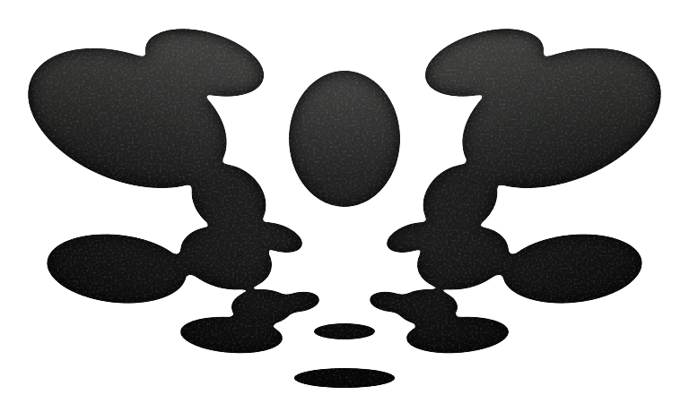
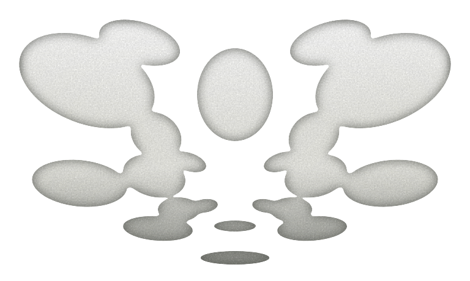
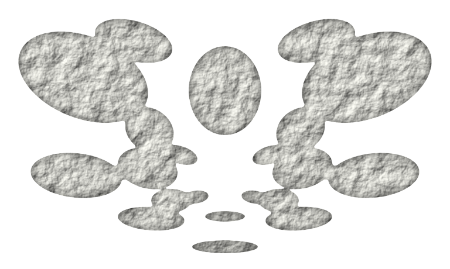
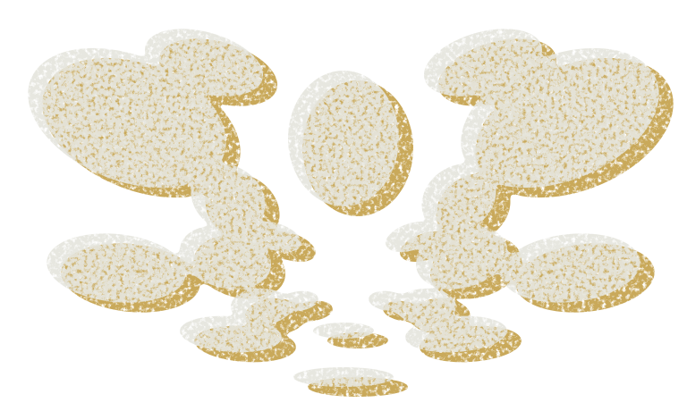

01 The mark


02 What it means
- An inkblot: like a Rorschach test, everyone sees something different. A lander, a moth, a mission patch. Last Signal asks you to look closer.
- Perfect mirror symmetry: the left half is Earth's side of the story, the right half is what was left out there.
- The central egg: the Moon, or the one object at the heart of every story. Everything else spreads out around it.
- Drops trailing down: the stack of shrinking dashes underneath, like debris settling on the surface.
03 Sizes & clear space

The mark always stands on its own, never inside a tile or badge. Use the textured version from 48px up and the flat version below that (grain turns to noise at small sizes). Keep clear space of one head height on all sides.
04 Colour
Green and orange are status colours, never decoration. The mark is Regolith on dark and Void on light, with a printed-ink finish: soft top light, a darker inked rim and fine film grain.
05 Typography
Headlines and the wordmark. Sentence case for story text, all caps only for titles.
LABELS · COORDINATES · COUNTERS · GRID A–F / 1–5
06 Voice
Looks like mission control, talks like a friendly guide. Real facts, short sentences, a bit of wonder.
"This rover drove 35 km on the Moon. Its tracks are still there."
"Lunar Roving Vehicle LRV-001 surface traversal: 35.74 km aggregate."
07 Do / Don't
- DOPut the mark on Void or Graphite. Let it breathe.
- DOUse the flat files for tiny sizes, embroidery and one-colour print.
- DON'TRotate it, stretch it, or break its symmetry.
- DON'TPut it in a rounded box, merge the drops, or recolour it green/orange.
- DON'TAdd outlines, glows or busy photo backgrounds behind it.
08 Texture variations

Primary. Soft light, inked rim, film grain.

45° dot screen, dots swell toward each lobe's centre. Posters, merch.

Depth contours, the same language as the terrain view. Data slides.

Banknote rules that thin toward the base. Certificates, stamps.

Lit lunar-rock surface. Hero images, the demo video intro.

Gold plate off-register under grainy ink. Stickers, zines.

Scattered pen dots, like moon dust settling. Backgrounds.

Mission-control pixel display, brighter at the core. Loading screens.
Same shape, different surface. Use one texture per piece, and use any of them from 120px up. Below that, switch to the flat mark.
09 Files
app-icon.svg square, transparent · vector app-icon-1024.png 1024 × 1024 lockup.svg horizontal · vector lockup.png 2400 × 600 mark.svg textured · light mark-black.svg textured · dark mark-flat.svg flat · light mark-flat-black.svg flat · dark favicon.svg 16–48 px · adapts to light/dark


Generated from one traced shape: python3 scripts/build_brand.py then python3 scripts/build_brand_variants.py (variants in variants/)